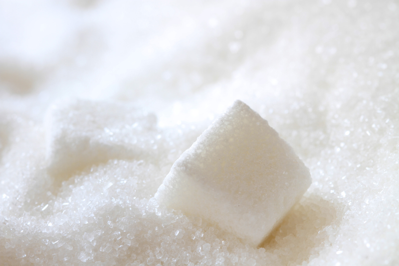

Welcome to Cugundur
Kırmızı Pancar Mide Bulantısını Giderir. – Faydalı Yaşam
2021.03.21 09:58
Skip to content
Faydalı Yaşam
HAYATA FAYDALI OL, HAYATTA MUTLU OL
Main Navigation Şifalı Bitkiler gül suyu Greyfurt kalsiyum Nar Börülce çinko Su demir yumurta MAGNEZYUM A vitamini yumurta kabuğu yağ Tavuk B12 vitamini folat Hastalıklar Cilt Saç cinsellik Diyabetik Ağız ve diş Migren Bağışıklık Göz Kalp sindirim Beynimiz Diyabetik Kanser Psikoloji Romatizma sinir sistemi Astım islam Cuma Süresi Bereket Terapi renk Spor kromoterapi zihin color alternatif tedavi canlılık duygu çarka mind body zihinsel sağlığı sanat terapisi beden physical health Sarı renk ruhsal sağlığı spiritual denge physical therapy fiziksel sağlığı Teknoloji Havacılık Eğitim Faydalı Video Kime Kalmış Mal Mülk Dünya Masaj Bebeklerde Keyfi Artırır Cuma Süresi Bereketi Artırır. İletişimKırmızı Pancar Mide Bulantısını Giderir.
By ferhan bala On 11 Ocak 2017 1 Ocak 2019 In sinditrim sistemi Tagged aerofaji , bağırsak , Hıçkırık , karınzarı , kırmızı pancar , mide , Mide Bulantısı , Safra kesesi , singultus , sunni solunum Leave a comment facebook tweet google+Kırmızı Pancar Mide Bulantısını Giderir.
Mide Bulantısı Mide de duyulan ve insana kusacak gibi bir duygu veren duruma “Mide Bulantısı” denir. Mide Bulantısı sebepleri çok çeşitlidir. Çeşit çeşit yemeklerin mide ve bağırsaklarda gereği gibi hazmedilmemiş olması, mide, bağırsak, safra kesesi, karınzarı veya böbreklerde iltihaplanma, mikroplu hastalıklar, sigara tiryakiliği, alkolikler ve sinir bozukluları mide bulantısına sebep olurlar. Kırmızı Pancar Mide Bulantısını Giderir. 1-2 gün içinde geçmeyen bulantılar için muhakkak doktora başvurulmalıdır.
Midede geğirmek Çoğunlukla sinirli kimselerde görülür. Bunlar yemeklerde haddinden fazla hava yutarlar. İnsanın geğirmesi mide veya safra kesesi hastalıklarının bir belirtisi olabilir. Bu nedenle sağlığımız için esas nedeni tespit etmek gerekir. Gıda zehirlenmeleri çoğunlukla bayatlamış ve bozuk yiyecekler veya bayat balık yedikten sonra görülür.
Belirtileri hasta solumakta, yutkunmakta güçlük çeker. Ayrıca kaslarında ağrı ve krampları, baş dönmesi, halsizlik, mide ağrısı ve bulanık gördüğünden şikayet eder. Bazı hastalarda kabızlık, bazılarında da ishal görülür. Bunun tedavisi için yapılacak ilk iş, hastayı kusturmaktır. Duruma göre gerekiyorsa sunni solunum da yapılır. Vakit kaybetmeden hastaneye veya en yakın doktora götürülür. Hava yutma Tıp dilinde aerofaji diye bilinen bu hastalıktır. Bu genellikle asabi mizaçlı kimselerde görülür. Bunlar yemek sırasında farkına varmadan fazlaca hava yutarlar. Böylece hava yutma mide ve bağırsak gazlarının oluşmasına yardımcı olur. Genellikle hıçkırık Solunum kasları ve özellikle diyaframın uyarılması sonucu ortaya çıkar. Hıçkırık Tıp dilinde singultus denir.
Nedenleri çok çeşitlidir. İnsanda basit hıçkırıklar çoğunlukla mide gazı, sıcak ve baharatlı yemekler, sinir bozukluğundan kaynaklanır. Hıçkırık nedenlerinde Bazı kalp, karaciğer, bağırsak ve pankreas hastalıkları, zatülcenp veya zatürreede de görülebilir. 3 saatten fazla süren hıçkırıklarda sağlık kuruluşuna ve doktora kontrol olmak gerekir. Midede geğirmek Çoğunlukla sinirli kimselerde görülür. Bunlar yemeklerde haddinden fazla hava yutarlar. İnsanın geğirmesi mide veya safra kesesi hastalıklarının bir belirtisi olabilir. Bu nedenle sağlığımız için esas nedeni tespit etmek gerekir. Gıda zehirlenmeleri çoğunlukla bayatlamış ve bozuk yiyecekler veya bayat balık yedikten sonra görülür. Belirtileri hasta solumakta, yutkunmakta güçlük çeker.
Ayrıca kaslarında ağrı ve krampları, baş dönmesi, halsizlik, mide ağrısı ve bulanık gördüğünden şikayet eder. Bazı hastalarda kabızlık, bazılarında da ishal görülür. Bunun tedavisi için yapılacak ilk iş, hastayı kusturmaktır. Duruma göre gerekiyorsa sunni solunum da yapılır. Vakit kaybetmeden hastaneye veya en yakın doktora götürülür. Hava yutma Tıp dilinde aerofaji diye bilinen bu hastalıktır. Bu genellikle asabi mizaçlı kimselerde görülür. Bunlar yemek sırasında farkına varmadan fazlaca hava yutarlar. Böylece hava yutma mide ve bağırsak gazlarının oluşmasına yardımcı olur. Genellikle hıçkırık Solunum kasları ve özellikle diyaframın uyarılması sonucu ortaya çıkar. Hıçkırık Tıp dilinde singultus denir. Nedenleri çok çeşitlidir. İnsanda basit hıçkırıklar çoğunlukla mide gazı, sıcak ve baharatlı yemekler, sinir bozukluğundan kaynaklanır. Hıçkırık nedenlerinde Bazı kalp, karaciğer, bağırsak ve pankreas hastalıkları, zatülcenp veya zatürreede de görülebilir. 3 saatten fazla süren hıçkırıklarda sağlık kuruluşuna ve doktora kontrol olmak gerekir.
Midede Hazımsızlık nedir bilemeyen bir kişiye çevrenizde çok nadir rastlarsınız. Yeme – içmelerden sonra pek çok insanı etkileyen oldukça yaygın bir sorundur. Buna Tıp dilinde dispepsi olarak adlandırılır. Kendi başına hastalık olarak kabul edilmez. Daha çok insanda altta yatan başka bir soruna işaret ediyor olabilir. Midede çalışmasında Hazımsızlık sindirimle ilgili bir dizi şikayeti kişilerde ortaya çıkarır. Neden olur diye füşündüğümüzde Midede çalışmasında Hazımsızlık temel olarak mide çeperindeki koruyucu tabakanın asit nedeniyle bozulması sonucu ortaya çıkar, tahriş ve ağrıya neden olabilir. Midede asit dengelerini bozan çeşitli nedenleri ise, hazımsızlığın diğer tetikleyicileri sebebleri ile birlikte düşünülür. Midede çalışmasında Hazımsızlıkta ağrı, karnın üst kısmında ya da göğüste hissedilebilir. Midede Hazımsızlık çekenler en çok şişkinlik hissinden sıkıntı veren bir tokluk ve doluluk hissinden veya mide yanmasından şikayet ederler. Sonrasında sık sık geğirme ve gaz çıkarma ihtiyacı hissedilir. Ağızda acı bir tat oluşur. Hazımsızlığın diğer belirtileri arasında bulantı, kusma ve iştah kaybı da sayılabilir.
Midede Hazımsızlık Neden Olur. Kişide Midede Hazımsızlık ve mide yanması benzer nedenlerle tetiklenebilir. Midede Hazımsızlık kişilerin farklı şekillerde ve başka başka nedenlerle şikayetçi oldukları deneyim olabilir. Nedenlerine baktığımızda stresten yeme hızına kadar uzanan pek çok ayrı sebep görebiliriz. Bazen birkaç neden de aynı anda Midede Hazımsızlık üzerinde etkilidir. Öğünlerde büyük porsiyonlara yer vermek, fazla yemek, midenin çok fazla asit üretmesine neden olabilir. Fiziksel olarak mideyi çok doldurmak baskı yapacağından, bu durum mide asidinin yemek borusuna doğru kaçmasına yol açabilir. Görüldüğü gibi çok fazla yemek yemek birkaç koldan hazımsızlığı tetikler. Makul porsiyonlarda veya gün içinde azar azar birkaç öğün tüketmek hazmı kolaylaştıracaktır. İnsanlarda düzensiz ya da çok hızlı yemek yemek midedeki asit seviyelerinin normale dönmesi için yeterince zaman tanınmaması anlamına gelir. Toplumda İş veya ev işi koşulları gereği yaşanan koşuşturmaca sırasında sık sık düzensiz ve hızlı şekilde öğünlerin geçiştirilmesi hazımsızlığı da tetikler. Hastanın Hareket halindeyken ya da yatmadan hemen önce yemek yemek, mide asidinin yemek borusuna doğru çıkmasını kolaylaştırır. En son yenilen yemekle yatağa girme arasında en az 2-3 saat olması tavsiye edilir. Yatmadan hemen önce yemek yemek hem hazımsızlığa hem de uykusuzluğa yol açabilir. İnsanlarda Yağlı gıdalar midede daha uzun süre kalır çünkü yağların sindirimi daha zordur. İnsanda Yemek borusu ile mide arasında halka biçiminde büzgen kas denilen kas grubu bulunur. Bu kas asit ve yiyeceklerin midede kalmasını ve tekrar yukarı çıkmamasını salar. Çikolata ve nane gibi yiyeceklerin bu kas üzerinde gevşetici bir etkisi olabilir. Bu da asidin tekrar yemek borusuna tırmanmasına sebep olabilir. Besinlerde baharatlı yiyecekler ve soğan ve domates ürünleri hazımsızlığı daha da tetikleyebilir. Kişi de asitli gıdalardan kaçınmak hazmı kolaylaştıracaktır
Kişilerde Yemek borusunda reflü, Safra kesesi, pankreas hastalıkları, Mide ülseri, gastrit benzeri her , türlü mide hastalığı, Huzursuz bağırsak sendromu, Çölyak hastalığı, Safra taşı, Kabızlık, Pankreas, ltihabı (pankreatit), Tiroid sorunları, Mide kanseri, Mide hareketlerinde sorunlar, Mide boşalmasında gecikme gibi sindirim sistemi bozuklukları / hastalıkları, midede Hazımsızlık Mı Kalp Krizi mi sorusuna Midede Hazımsızlık belirtileri ile kalp krizi belirtileri arasında bir benzerlik olduğu doğrudur.fakat kalp krizinde terleme, göğüs, boyun, çene ve kol ağrısı, kişilerde nefes darlığı gibi başka belirtiler de Midede Hazımsızlık belirtilerine beraber hareket edebilir. Midede Hazımsızlıktan sık yakınan biri değilseniz veya ortaya çıkan belirtiler size normal gelmiyorsa ve yukarıda saydığımız diğer kalp krizi belirtileri de söz konusuysa, hemen en yakın hastane ve sağlık kuruluşuna başvurmalısınız.
Midede Hazımsızlık Nasıl Önlenir. İnsanlarda 40 yaş üstü kişilerde Midede Hazımsızlık şikayeti varsa, hazımsızlığı kendi kendine gidermeye çalışmak yerine doktor muayenesi tavsiye edilir. Bunun dışında Midede Hazımsızlık belirtileri dışında başka iştah kaybı, kilo kaybı, sık kusma, koyu renk dışkı, yutma sırasında zorlanma ya da ağrı gibi çeşitli hastalıkları kişide akla getirebilecek daha şiddetli belirtiler varsa, yine yaş fark etmeksizin önce uzman doktor muayenesi gerekir. Midede Hazımsızlık genellikle insanlarda kendiliğinden bir kaç saat içerisinde geçer ya da reçetesiz de satılan mide asidi ilaçları ile midede rahatlama sağlanabilir. Fakat hazımsızlığı baştan önlemek için yapabilecekleriniz de vardır. Z
Kişilerde Aspirin ya da ağrı kesici gibi ilaçlar doktor tavsiyesi ile kullanılmıyorsa, önlem olarak ara verilmelidir. Eğer doktor tavsiyesi ile kullandığınız ilacın hazımsızlığa yol açtığını düşünüyorsanız derhal doktora danışmadan ilacı bırakmamalı, şikayetinizi size ilacı yazan doktora ivedi bildirmelisiniz. İnsanlar dinlenmeye vakit ayrılmalıdır. Kişinin Fiziksel ve duygusal stresi azaltmanın yolları araştırılmalıdır. İnsanlarda Stres vücutta çeşitli hormonlar üzerinde etkili olur ve çeşitli sağlık sorunlarını tetikler ve Mide de stresten olumsuz yönde etkilenir.
Kırmızı pancar suyu Kan yapıyor. Kırmızı pancar suyu karaciğere de faydalı oluyor. Yapraklarını da taze olarak yiyebilirsiniz, salatalarınıza katabilirsiniz. Maydanoz ve kereviz yaprakları kırmızı pancarın faydaları ve yararlarını arttırıyor. Kırmızı pancar suyu, karalahana, ıspanak, havuç veya semizotu suyuyla karıştırılabilir. Kırmızı pancar suyunu içerken 30-50gr’dan başlayarak 400 grama kadar çıkmak mümkündür. İlk önce 50gr. kırmızı pancar, 150gr. havuç suyuyla karıştırılır, sonra 75gr. kırmızı pancar, 125 gr. havuç suyu, sonra 100gr. kırmızı pancar, 100gr. havuç suyu, sonra da saf kırmızı pancar, su ile karıştırılarak içilir Kırmızı Pancar ve Kırmızı Pancar Suyu Nasıl tüketilir?.. Kırmızı pancar Avrupa’da yemeği yapılan sebzedir. Yurdumuzda turşusu meşhur. Salata olarak tüketmeyi alışkanlık haline getirirseniz aslında en faydalısı budur. Çeşni vermek için salata içine katılan baharat ve fabrikasyon sirke gibi içinde yoğun asitli soslar pancarın sindirimini vucudumuzda güçleştirir, Bu yüzden yaptığınız salatanıza biraz sızma zeytinyağı, biraz limon ve doğal kaya tuzu ile hafif sos hazırlayabilirsiniz.
Dikkat şeker hastası olanlara zararlı!
Kırmızı Pancarın olumlu etkisinin yanında şeker pancarının sakıncalı olduğu durumlar da var! Şeker hastalığına karşı koruyor ancak şeker hastası olanlara içerdiği yüksek şeker miktarından dolayı zararlıdır. Şeker hastaları doktoruna danışmadan, kırmızı pancarı tüketmemeli !. Yüksek tansiyonu olanlar insanlar kırmızı pancarı az miktarda tüketmelidir. Doktorunuza danışmadan besin takviyesinde bulunmayın..
Red Beet The Nausea Resolves.
Heard it’s giving people a queasy feeling in the stomach and nausea, “nausea” is called. The reasons for nausea are many and varied.
Foods such as chocolate and mint may have a relaxant effect of this on Nov. This can cause acid to climb back into the esophagus. Foods, spicy foods, onions and tomato products can trigger indigestion and even more. People will make to avoid acidic foods easier to digest.
If you are not suffering from indigestion in the stomach, it’s not normal, and often someone or the resulting symptoms above-mentioned other when it comes to heart attack symptoms, you should consult your health care provider immediately and go to the nearest hospital.
How To Prevent Indigestion In The Stomach. In people over the age of 40 in people in the stomach complaints of Indigestion if you have indigestion instead of trying to fix yourself a doctor’s examination is recommended.
Blood red beet juice. Red beet juice is beneficial to the liver. You can also eat the leaves fresh, you can add it to salads. Benefits and increases the benefits of red beet parsley and celery leaves. Red beet juice, Kale, spinach, carrots, or cauliflower can be mixed with juice. 30 while drinking red beet juice-starting from 400 grams it is possible to 50gr. First, 50g. red beetroot, 150g. mixed with carrot juice, then 75gr. red beet, 125 gr. carrot juice, then 100gr. red beet, 100gr. carrot juice, then pure red beet red beet red beet juice is consumed mixed with water and drink how much?..
Caution to those with diabetes is harmful!
In addition to the positive impact of red beet, sugar beet there are cases where it is objectionable! Protects against diabetes, but people with diabetes are included due to the high amount of sugar that is harmful. Diabetics without consulting a doctor, you must consume red beet !. Those people with high blood pressure, you should consume a small amount of red beet. In the supplement without consulting your doctor don’t bother.
Rote Bete Die Übelkeit Behebt.
Schluckauf singultus in der medizinischen Sprache. Die Gründe dafür sind vielfältig und abwechslungsreich. Schluckauf oft, dass die Leute einfach Magen gas, heißen und würzigen Speisen, durch eine Nerven-Erkrankung. Einige der Ursachen von Schluckauf Herz -, Leber -, Darm-und Pankreas-Erkrankungen, Pleuritis oder Pneumonie gesehen werden kann. Schluckauf, die dauerte mehr als 3 Stunden im health-care-Organisationen Arzt-und Auschecken, die Sie brauchen werden.
Verdauungsstörungen im Magen ist, um eine person, die nicht weiß, was Sie stoßen werden sehr selten. Nach dem Essen und trinken, ist ein sehr häufiges problem, betrifft viele Menschen. In der Sprache der Medizin ist dies genannt Dyspepsie.
Im Magen Führt Zu Verdauungsstörungen. Aus ähnlichen Gründen wie die person in den Magen, Verdauungsstörungen und Sodbrennen ausgelöst werden kann. Verdauungsstörungen im Magen, in unterschiedlicher Weise und aus verschiedenen Gründen kann die Erfahrung von Individuen, die Sie sind, sich zu beschweren.
Leute bleibt länger im Magen, weil fetthaltige Lebensmittel sind schwerer zu verdauen Fette. Schließmuskel zwischen Speiseröhre und Magen nennt sich die menschliche Nov Nov Gruppe befindet sich in einem öffentlichen format.
Appetitlosigkeit, Anämie, frühe Sättigung, und andere Symptome wie Schluckbeschwerden sind auch zu sehen.
Wie Sie Verhindern, Dass Verdauungsstörungen In Den Magen. Bei Menschen über dem Alter von 40 Jahren in die Menschen, in der Bauch-Beschwerden, Verdauungsstörungen,
Bei Menschen, die verschiedenen gesundheitlichen Probleme löst stress im Körper und in den Magen nehmen Einfluss auf verschiedene Hormone und stress beeinträchtigt werden.
Blut rote-bete-Saft. Rote-bete-Saft ist vorteilhaft für die Leber. Sie können auch die Blätter Essen frisch, können Sie Sie zu Salaten. Vorteile und erhöht die Vorteile des rote Rüben, Petersilie und Sellerie Blätter.
Betterave Rouge Les Nausées Se Résout.
Indigestion dans l’estomac est autour d’une personne qui ne sais pas ce que vous croiserez que très rarement.
Si vous ne souffrez pas d’indigestion dans l’estomac, il n’est pas normal, et souvent de quelqu’un ou de l’résultant des symptômes mentionnés ci-dessus quand il s’agit des symptômes de la crise cardiaque, vous devriez consulter votre fournisseur de soins de santé immédiatement et d’aller à l’hôpital le plus proche.
Comment Prévenir L’Indigestion Dans L’Estomac. Chez les personnes de plus de 40 ans dans les gens dans les problèmes d’estomac, s.
البنجر الأحمر الغثيان يحل.
التي تحتوي على الكافيين والمشروبات الكحولية المشروبات المفضلة في الناس قد يؤدي إلى زيادة كمية الأحماض في المعدة. لا تأكل ك
红甜菜恶心可以解决的。
消化不良在肚子周围是一个人谁不知道你会碰到非常少。
人们不再停留在肚子，因为脂肪的食物都更加难以消化脂肪。 括约肌之间的和胃食道被称为人Nov月组是位于一个公开的格式。 这使得胃酸和粮食份在他停留。 食物，如巧克力和薄荷，可能有一个松弛剂作用。 这可能会导致酸爬回到食道。 食品、辛辣食物、洋葱和番茄产品可以触发消化不良，甚至更多。 人们会做到避免酸性食物更容易消化。
注意到那些糖尿病是有害的！
除了积极影响的红色甜菜、甜菜还有一些情况下，它是令人讨厌的! 保护对糖尿病，但是糖尿病人中包括由于高额的食糖，是有害的。 糖尿病患者没有咨询医生，你必须消耗红甜菜的！ 那些患有高血压，你应该消耗量小红甜菜。 在补充没有咨询医生不用麻烦了
Красная Свекла Устраняет Тошноту.
Икота причины в некоторые сердца, печени, кишечника, поджелудочной железы и заболеваний, zatulcenp или пневмонии также может быть видно. Более 3 часов длилась рыдания в медицинское учреждение к врачу и проверить ..
Что такое несварение желудка, знаете, человек, который не очень редко, вокруг отеля rasta. Еды и питья, после влияет так много людей, довольно распространенная проблема. На медицинском языке это называется диспепсия.
Эти кислоты также снова в пищевод может привести к эскалации. Продуктов питания острую пищу и продукты, лук и помидоры, чем расстройство желудка вызвать может. Человек также избегать кислых продуктов переваривается легче будет.
У лиц с выбором напитков с кофеином и алкогольные напитки, кислоты в желудке может повысить ставки. Много ела или продукты, которые также обратили внимание, то в случае жалобы на несварение желудка, если вы в этой ситуации за напитки могут быть Ваши привычки.
Как Предотвратить Несварение Желудка. У людей, у лиц старше 40 лет, если у вас есть жалобы несварение желудка, расстройство желудка самостоятельно решить врач, а не работать рекомендуется обследование.
La Remolacha Roja La Náusea Se Resuelv e.
.
En El Estómago Que Conduce A La Indigestión. Por razones similares a la persona en el estómago, la indigestión y la acidez estomacal puede ser activado.
La gente permanece más tiempo en el estómago debido a que los alimentos grasos son más difíciles de digerir las grasas.
Con cafeína y las bebidas alcohólicas las bebidas de elección en las personas puede aumentar la cantidad de ácido en el estómago. No comer mucho en el estómago o indigestión si usted tiene cuidado acerca de su dieta si usted tiene síntomas, su bebida hábitos pueden ser responsables de esta situación.
La gente de reflujo en el esófago, vesícula biliar, enfermedades pancreáticas, úlceras de estómago, gastritis, etc, como todos , cualquier enfermedad del estómago, síndrome de intestino irritable, la enfermedad celíaca, cálculos biliares,
Cómo Prevenir La Indigestión En El Estómago. En personas de más de 40 años de edad en las personas en el estómago quejas de la Indigestión si tiene indigestión en lugar de intentar arreglar usted mismo un médico se recomienda el examen.
Vermelho Beterraba, A Náusea Resolve.
Também a dor e cãibras nos músculos, tontura, fadiga, dor de estômago turva vê e reclama. Alguns pacientes com constipação, algumas pessoas também podem causar vômitos. Primeira coisa a fazer para curá-lo, o paciente kusturmak.
No Estômago Leva À Indigestão. Por razões semelhantes para a pessoa no estômago, indigestão e azia pode ser acionado. Indigestão no estômago de diferentes maneiras e por diferentes razões pode ser a experiência de pessoas que estão reclamando.
As pessoas permanece mais tempo no estômago,
As pessoas refluxo do esôfago, vesícula biliar, pâncreas, doenças, úlceras estomacais, gastrite, etc., tal como todos , qualquer estômago, doença, síndrome do cólon irritável,
Sangue vermelho de beterraba, suco. Vermelho beterraba, o suco é benéfico para o fígado. Você também pode comer as folhas frescas, você pode adicioná-lo para saladas.
 
.
Hurma, iktidarsızlığa iyi Geliyor
.
.
Zemzem Suyu Gençleştirir
.
.
Anne Sütü Gözde Kaşıntı, Nezle, Kızarıklığa Faydalıdır.
.
.
Parmak basınç masacı Akupunktur Ağrılara Faydalıdır
.
.
Karpuz Gece Körlüğü Riskini Azaltır
.
.
.
Kırmızı Pancar Mide Bulantısını Giderir.
Bilgi kaynaklarımız:
www.google.com
www.faydaliyasam.com
www.naturlebens.com
www.humancurative.com
www.bitkiveinsan.com
.
UYARI:
Hastaliklari teşhis, tedavi etmek 1219 sayılı Tababet Kanunu’na göre sadece hekimlerimizin görevidir. Bu web sitesinde yer alan bilgiler sağlıklı ve faydali yaşama hakkında tavsiye niteliğinde olup paylaşımlar ve konularımız tavsiye ettiğimiz ürünlerimiz ilaç değil, faydali yaşama besin destek ürünleridir. Tedavi veya doktor tedavisi yerine geçmez. Paylaşılan metin ve Kürlerin içerisinde geçen bitkilerin kullanımından önce, adı geçen bitkilere alerjiniz olup olmadığını kontrol ettirdikten sonra kullanmanız tavsiye olunur. Hayata sağlıklı, afiyet içinde, faydali yaşamanız dileklerimizle.
.
;
PaylaşRelated posts:
Kırmızı Pancar Mide Tembelliğine Faydalıdır Pişirilmiş Kırmızı Pancar Safra Kesesini Temizler. Kırmızı Pancar Mide hazımsızlığına faydalıdır Kırmızı Pancar Midede Geğirmeye FaydalıdırRelated Posts
Kırmızı Pancar Mide Gazı ve Gastrit faydalıdır Yumurta Kilo Vermeyi Kolaylaştırır, Zayıflatır. Kırmızı Pancar Mide Ağrısı Gideriyor.About Auther: ferhan bala
Hayata faydali olmak, Hayatta Mutlu olmaktir.
Post navigation
Kırmızı Pancar Midede Geğirmeye Faydalıdır Kırmızı Pancar Mide Ağrısı Gideriyor.Bir cevap yazın Cevabı iptal et
This site uses Akismet to reduce spam. Learn how your comment data is processed .
Adsense
Adsense 1
Sayfalar
Adsense 2
Kategoriler
AC2 proteini (1) Ağız ve diş (3) Akciğer (4) Altın (1) Astım (2) Bağışıklık (28) Bereket (1) Böbrek (9) Cilt (26) cinsellik (6) Covid-19 (1) Cuma Süresi (1) d vitamini (1) defne (3) diş (1) Diyabetik (6) diyet (1) Doğum (2) domates (1) domuz (1) dut (1) Faydali Video (2) Göz (17) Greyfurt (1) gül suyu (1) Hastalıklar (1) Havacılık (10) idrar yolu (1) İmmün Plazma (1) incir (1) insan beyni (9) islam (1) kaju (1) Kalp rahatsızlığı (10) Kan (3) Kanser (12) Karaciğer (4) Kas Ağrıları (11) kayısı (1) kekik (1) Kırmızı Pancar (1) kızılcık (1) Korona Virus (4) Kovid-19 (4) Makale (3) mantar (1) mide (5) Migren (1) Nar (2) Psikoloji (7) Romatizma (1) sarı kantaron (1) Sialik asit (1) sinditrim sistemi (16) sinir sistemi (7) sirke (1) solunum sistemi (1) tarçın (1) Teknoloji (1) Tez (1) Uyku (2) Virus (1) Yağmur (1) yorgunluk (1) Zemzem (1) Zerdeçal (1) zeytinyağı (1)Faydali Yasam
UYARI
Hastaliklari teşhis, tedavi etmek 1219 sayılı Tababet Kanunu’na göre sadece hekimlerimizin görevidir. Bu web sitesinde yer alan bilgiler sağlıklı ve faydali yaşama hakkında tavsiye niteliğinde olup paylaşımlar ve konularımız tavsiye ettiğimiz ürünlerimiz ilaç değil, faydali yaşama besin destek ürünleridir. Tedavi veya doktor tedavisi yerine geçmez. Paylaşılan metinlerde ve Kürlerin içerisinde geçen bitkilerin kullanımından önce, adı geçen bitkilere alerjiniz olup olmadığını kontrol ettirdikten sonra kullanmanız tavsiye olunur. Hayata sağlıklı, afiyet içinde, topluma ve kendinize faydalı yaşamanız dileklerimizle..Facebook Grubu
Facebook Admin Eastern Europe Herkese Açık Grup · 941 üye Gruba Katıl Facebook Admin Eastern Europe Group SuperAds Lite powered by WordPress Paylaş